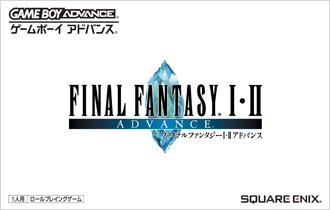
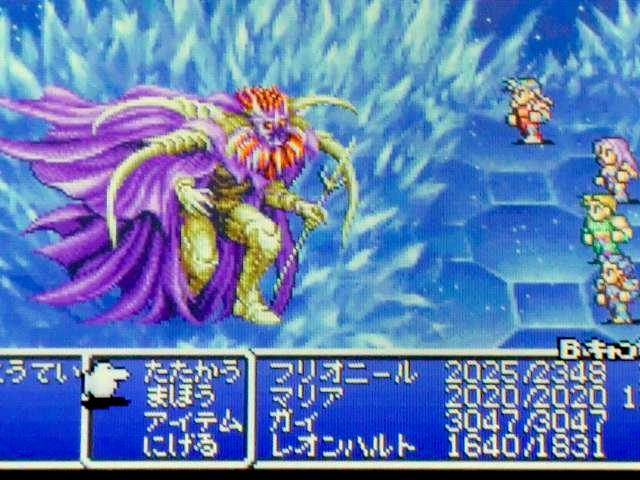
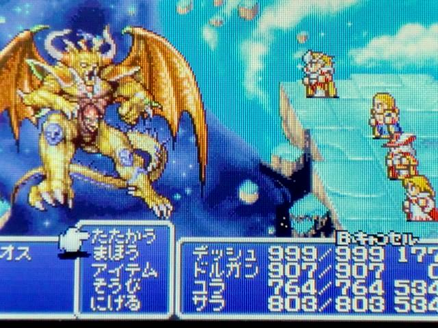

----FINAL FANTASY.Ⅰ・Ⅱアドバンス----
『ファイナルファンタジーI・Ⅱ』は、スクウェアおよびスクウェア・エニックスから発売されたカップリング作品。ファイナルファンタジーシリーズのうち、第1作『ファイナルファンタジー』と第2作『ファイナルファンタジーⅡ』を合わせて1本のゲームソフトとして発売されたものである。
ゲームボーイアドバンス版『ファイナルファンタジーI・Ⅱ アドバンス』は、2004年7月29日にスクウェア・エニックスより発売された。
当初2004年7月15日発売だったが、「改善すべき不具合が見つかった」ため、2週間後に延期された。
これまでにも『I』と『Ⅱ』は何度かリメイクされていたが、原作のシステムに大きな変更が加えられることは無かったが、GBA版『I・Ⅱ アドバンス』は、原作から大幅にシステムを改変された。
このGBA版『I・Ⅱ アドバンス』のシステムは、後に発売されたPlayStation Portable版『I』と『Ⅱ』にも引き継がれた。
ゲームプレイ画面↓

押すとホームに戻る

|